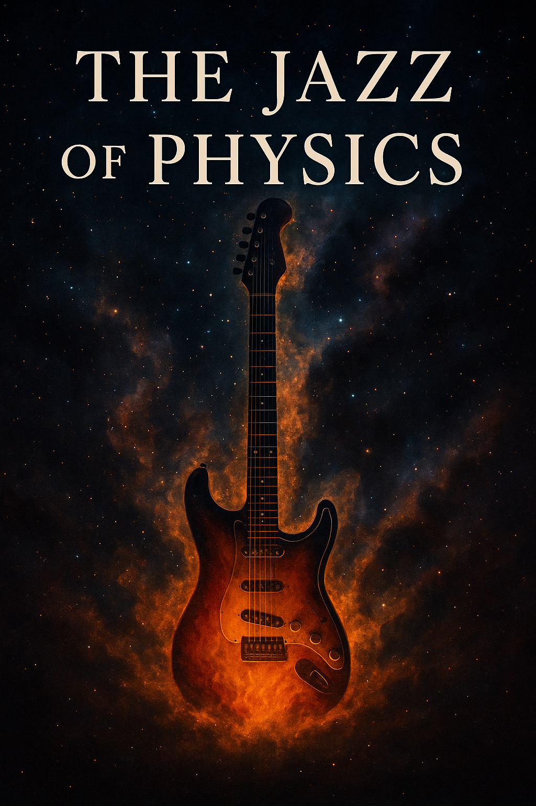

Menu
Menu

When I started reading the Qur’an again—after years of keeping it closed—I was surprised by how much freedom it held. It’s a book of questions, of requests, of needs, even demands. It’s a dialogue. And God clearly states that answers are given through learning the rules of what you want and need.
For the longest time, I wondered why God insists—almost in every illustrative Surah—to mention the creation of the heavens and the earth and everything in between. But through experience, I began to see: every time I took an interest in one of God's names, or a phrase from the Qur’an, it led me to knowledge. Knowledge of myself, mostly. And most times, I’d end up forgetting what I was originally looking for, lost in awe at the layers of truth I’d uncovered.
I was trained in the Western style of education. In Sudan, we followed the top-down British system—starting with theory, and maybe applying it later. Later, I encountered the bottom-up approach—the American way—where students begin with doing, and theory follows. That felt more alive to me.
But the Qur’an… the Qur’an is a different kind of teacher altogether. “الرحمن علم القرآن” — The Most Merciful taught the Qur’an. It invites you to follow your interests. To move through curiosity. And I must admit—my love for learning had dimmed when school stopped being useful to my real life. Where did those equations live beyond the exam papers?
And yet… my mind expanded. I stopped “learning” in the traditional sense and started recognizing patterns—living patterns.
I left my office as a cosmologist because I wanted to live. I didn’t expect that the equations I’d studied for most of my life would begin to breathe with me. That they’d show up in the rhythm of things, in real time.
Then I found this beautiful book, The Jazz of Physics, and I realized I wasn’t alone. So many cosmologists before me walked these winding paths—studying the universe and finding it in music, in jam sessions, in 3:00 a.m. wine-sipped conversations in Manhattan bars.
The Jazz of Physics by Stephon Alexander
Who would’ve thought that the book my family revered—the one my mother made sure I always packed in my travel bag—would become the portal to my real education? For years I kept the Qur’an out of love for her, as a souvenir. But the day I finally opened it… that’s when my true learning began.
Now, five years into this journey—through yoga, dream spells, quantum techniques, and the mystic path of the Qur’an—I’ve made many mistakes, like any student. But what continues to blow my mind is that every single time I fall, forgiveness is already standing in front of me: غفور رحيم — Most Forgiving, Most Merciful.
My practice is simple. I wake up early and recite a Surah slowly, breathing with it, focusing on pronunciation, letting the words settle into my body before the world gets loud. Over time, I started waking with phrases floating into my mind—like “لنهدينهم سبلنا…” (We will surely guide them to Our paths). I’d look it up—Al-Ankabut—and that Surah would lead me to another, like a breadcrumb trail of meaning.
On one Tuesday, for example, I started with Surah Ar-Rahman. Then it led me to Al-Ankabut. That led me to Al-Qalam. That day was already patterned—coded for learning. A day of solitude and knowledge unraveling itself. And I probably wouldn’t see anyone.